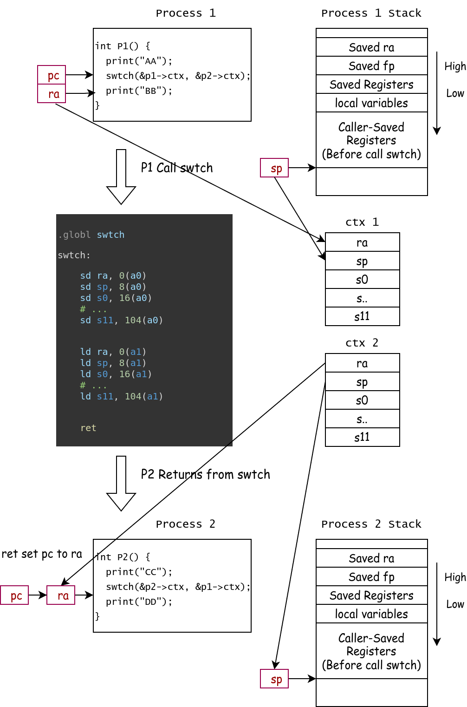

Context Switch¶
上下文切换 (Context Switch) 是操作系统中的一个重要概念，本章我们将集中于 Context Switch 在技术上的实现，和 xv6 中调度器 (scheduler) 的设计。
什么是 Context¶
在操作系统中，Context (上下文) 是指在某一时刻程序运行所需的所有状态信息的集合。在 xv6 系统中，我们规定每个 Process 是一个独立的可被调度的实体，也就是说，每个 Process 拥有自己的 Context。
理解 Context 的重要性在于：当操作系统需要切换执行不同的进程时，必须保存当前进程的 Context，并加载要切换到的进程的 Context。这样才能确保进程在下次获得 CPU 时能够从之前的状态继续执行。这个保存和恢复 Context 的过程就是 Context Switch 的核心内容。
想象一下你正在读一本书，当你需要暂时去做别的事情时，你会用书签标记当前阅读的位置。这个书签就相当于保存了你的"阅读上下文"。当你回来继续读书时，通过书签就能知道从哪里继续读起。操作系统中的 Context 作用与此类似，只是需要保存和恢复的信息要复杂得多。
为什么要 Context Switch¶
从调度 (Scheduling) 的角度来看，Context Switch 是实现多任务处理和资源复用的关键机制：
-
CPU 资源的时分复用
当系统中有多个就绪进程需要运行时，操作系统需要让它们轮流使用 CPU。即使操作系统只有单个CPU，通过时分复用轮流运行不同的进程，可以实现所有进程好像在同时运行的效果。调度器会根据调度策略（如 Round Robin、Priority Scheduling 等）决定在某个时刻应该运行哪个进程。为了切换到被调度的进程，就必须执行 Context Switch。
-
提高系统吞吐量
当一个进程因为 I/O 操作而阻塞时，CPU 会闲置。通过 Context Switch，调度器可以切换到其他就绪进程，这样 CPU 就能在等待 I/O 的同时继续执行其他任务，最终提高了整个系统的资源利用率和吞吐量。
-
响应交互式任务
用户交互程序需要及时响应。通过 Context Switch，调度器可以暂停当前运行的批处理任务，迅速切换到需要立即响应的交互式任务，实现更好的用户体验。
什么时候进行 Context Switch¶
通常 Context Switch 发生在以下几种情况：
-
时间片到期时（Time Slice Expiration）
在采用时间片轮转调度算法时，当进程用完分配的时间片，系统的时钟中断触发，操作系统强制进行 Context Switch，切换到其他就绪进程。
-
进程进入阻塞状态时（Process Blocking）
进程发起系统调用等待 I/O 操作，进程等待某个事件（如信号量），进程申请资源但无法立即获得。
此时进程主动放弃 CPU，调度器选择其他就绪进程运行。
-
进程主动让出 CPU 时（Voluntary Yield）
进程调用
yield系统调用，主动放弃剩余的时间片，通常用于进程感知到自己短期内无事可做时。
xv6 Context Switch 实现¶
在 xv6 中，我们定义一个进程的内核 Context 为：
// Saved registers for kernel context switches.
struct context {
uint64 ra;
uint64 sp;
// callee-saved
uint64 s0;
uint64 s1;
uint64 s2;
uint64 s3;
uint64 s4;
uint64 s5;
uint64 s6;
uint64 s7;
uint64 s8;
uint64 s9;
uint64 s10;
uint64 s11;
};
在 switch.S 文件中，我们定义"函数" swtch，该函数的原型为 void swtch(struct context *old, struct context *new)。
# Context switch
# void swtch(struct context *old, struct context *new);
# Save current registers in old. Load from new.
.globl swtch
swtch:
sd ra, 0(a0)
sd sp, 8(a0)
sd s0, 16(a0)
sd s1, 24(a0)
sd s2, 32(a0)
sd s3, 40(a0)
sd s4, 48(a0)
sd s5, 56(a0)
sd s6, 64(a0)
sd s7, 72(a0)
sd s8, 80(a0)
sd s9, 88(a0)
sd s10, 96(a0)
sd s11, 104(a0)
ld ra, 0(a1)
ld sp, 8(a1)
ld s0, 16(a1)
ld s1, 24(a1)
ld s2, 32(a1)
ld s3, 40(a1)
ld s4, 48(a1)
ld s5, 56(a1)
ld s6, 64(a1)
ld s7, 72(a1)
ld s8, 80(a1)
ld s9, 88(a1)
ld s10, 96(a1)
ld s11, 104(a1)
ret
当我们需要进行上下文切换时，我们需要调用 swtch 函数，并给出两个 struct context* 指针，分别表示，当前的 Context 应该被保存到哪里 (old)，和之后应该从哪里继续执行 (new)。
由于我们是 C 语言中调用一个函数，编译器会按照 RISC-V 的 Calling Convention 构造环境，例如返回地址会被写入在 ra 寄存器中，这通常是通过 jalr 指令实现的。
而根据 RISC-V 的 Calling Convention，寄存器的值要么需要调用者自己保存 (Caller-saved register)，被调用者能够随意修改这些寄存器；要么被调用者在需要修改这些寄存器时保存 (Callee-saved register)。并且，调用者会在自己的栈帧 (Stack Frame) 上保存这些 caller-saved register (这一步是由编译器自动进行的)，所以，我们只需要记住 sp 寄存器，即可再下次返回时让 old 找回这些 caller-saved register。

下图展示了 P1 切换到 P2 的过程，P1 和 P2 有各自的 Stack，有各自的 Context 结构体。

P1 在执行 P1 函数时，会在函数开头 (prologue) 保存 P1 的调用者的返回地址，同时局部变量也是在栈上开辟的。在 P1 调用 swtch 前，编译器在已经将所有 Caller-Saved Registers 保存在栈上，然后编译器生成 jal swtch 的汇编，这一调汇编执行时会将 ra 设置为 P1 函数中 jal 的下一条指令。
在调用 swtch 时，a0 指向了 P1 的 struct context 结构体，swtch 使用 sd 指令保存 ra, sp 和 s0 - s11 寄存器。
之后，swtch 从 a1 加载即将恢复的 P2 的 Context，使用 ld 指令从 struct context 结构体中读取属于 P2 的 ra, sp 和 s0 - s11 寄存器。
在 CPU 执行到 ret 时，pc 被恢复为 ra 寄存器的值，此时开始执行上次 P2 调用 swtch 时保存的返回地址。
至此，成功完成了从 P1 到 P2 的切换。
此外，swtch 方法是天生成对的：如果上次使用 swtch 离开了当前进程，那么下次返回时，必定是有其他进程调用了 swtch 回到了该进程。
xv6 Process¶
代码：
os/sched.c,os/smp.c,os/proc.h
在 xv6 中，Process Control Block (PCB) 被定义如下：
// Per-process state
struct proc {
spinlock_t lock;
// p->lock must be held when accessing to these fields:
enum procstate state; // Process state
int pid; // Process ID
uint64 exit_code;
void *sleep_chan;
int killed;
struct proc *parent; // Parent process
// User Memory Management
struct mm *mm;
struct vma *vma_ustack;
struct vma *vma_brk;
struct vma *vma_trapframe;
struct vma *vma_trampoline;
// User Trapframe
struct trapframe *__kva trapframe; // data page for trampoline.S
uint64 __kva kstack; // Virtual address of kernel stack
struct context context; // swtch() here to run process
};
enum procstate { UNUSED, USED, SLEEPING, RUNNABLE, RUNNING, ZOMBIE };
每个 Process 有自己的 pid, 进程状态、parent 指针、内核栈、和内核 Context。
对于有用户态的 Process，PCB 中还有负责管理内存的 struct mm，和保存 User mode 下 Trap 触发时数据的 Trapframe。
除此之外，每个进程都有一个自旋锁 spinlock_t，尽管我们目前理论课还没有接触到锁的相关知识，但是我们在 xv6 中规定：访问所有 struct proc 的成员时，都需要在持有 p->lock 的情况下进行。
偷跑：什么是锁
锁 (lock) 是一种控制并发访问的基本工具。
我们规定：在我们持有 (holding) 一把自旋锁时：1. 该 CPU 不能被中断，2. 其他 CPU 不能同时持有这一把锁。
如果抢不到锁，那么 CPU 会进行原地空转直到抢到锁。
我们使用 acquire 和 release 原语表示 上锁 和 解锁 的动作。
struct cpu¶
在 xv6 中，我们使用 struct cpu 描述每个 CPU 的状态，我们是用 mycpu() 方法获取当前 cpu 对象。
struct cpu {
int mhart_id; // mhartid for this cpu, passed by OpenSBI
struct proc *proc; // current process
struct context sched_context; // scheduler context, swtch() here to run scheduler
int inkernel_trap; // whether we are in a kernel trap context
int noff; // how many push-off
int interrupt_on; // Is the interrupt Enabled before the first push-off?
uint64 sched_kstack_top; // top of per-cpu sheduler kernel stack
int cpuid; // for debug purpose
};
关中断¶
在内核代码中，我们有时会希望当前的执行不会被打断、不会被其他任务抢占，我们可以通过关闭中断来实现这一点。（当然，异常还是会直接跳入 Trap Handler 的）
我们使用 push_off() 和 pop_off() 表示一对 关中断/开中断的操作。由于我们可能会有嵌套 push_off 的情况，我们可以将关中断视为一种“压栈”操作，并且当且仅当栈空时才恢复原样，我们在 struct cpu 中记录两个变量：
-
noff：我们目前push_off/pop_off的深度是多少。例如
push_off(),push_off(),pop_off()序列后，noff应该为 1. -
在第一次
push_off()时，即noff == 0时，CPU 的中断是开的还是关的。
void push_off(void) {
uint64 ra = r_ra();
int old = intr_get();
intr_off();
if (mycpu()->noff == 0) {
// warnf("intr on saved: %p", ra);
mycpu()->interrupt_on = old;
}
mycpu()->noff += 1;
}
void pop_off(void) {
uint64 ra = r_ra();
struct cpu *c = mycpu();
if (intr_get())
panic("pop_off - interruptible");
if (c->noff < 1)
panic("pop_off - unpair");
c->noff -= 1;
if (c->noff == 0 && c->interrupt_on) {
if (c->inkernel_trap)
panic("pop_off->intr_on happens in kernel trap");
// we only open the interrupt if:
// 1. the push-pop stack is cleared, and
// 2. the interrupt was on before the first push-off
intr_on();
}
}
xv6 scheduler¶
xv6 中，每个 CPU 都有一个自己的 scheduler。scheduler 方法从不返回，其中是一个 while(1) 死循环。
p = fetch_task(); ：每次循环时，scheduler 都尝试获取一个 task。
如果获取不到，检查是否所有进程都退出了。如果是，则表明系统应该结束运行了，如果不是，我们使用 wfi (Wait For Interrupt) 指令等待下一次时钟中断，这一步等价于用 while(1); 使CPU空转一段时间。
如果我们成功获取到了一个进程，则对该进程上锁 acquire(&p->lock)，将其状态设置为 RUNNING，将当前 cpu 正在运行的进程设为该进程，随后，使用 swtch 方法跳转到该进程保存的 Context 中，并保存当前 Context 到 cpu->sched_context 中。
// Scheduler never returns. It loops, doing:
// - choose a process to run.
// - swtch to start running that process.
// - eventually that process transfers control
// via swtch back to the scheduler.
void scheduler() {
struct proc *p;
struct cpu *c = mycpu();
// We only get here once.
// After each cpu boots, it calls scheduler().
// If this scheduler finds any possible process to run, it will switch to it.
// And the scheduler context is saved on "mycpu()->sched_context"
for (;;) {
// intr may be on here.
p = fetch_task();
if (p == NULL) {
// if we cannot find a process in the task_queue
// maybe some processes are SLEEPING and some are RUNNABLE
if (all_dead()) {
panic("[cpu %d] scheduler dead.", c->cpuid);
} else {
// nothing to run; stop running on this core until an interrupt.
intr_on();
asm volatile("wfi");
intr_off();
continue;
}
}
acquire(&p->lock);
assert(p->state == RUNNABLE);
infof("switch to proc %d(%d)", p->index, p->pid);
p->state = RUNNING;
c->proc = p;
swtch(&c->sched_context, &p->context);
// When we get back here, someone must have called swtch(..., &c->sched_context);
assert(c->proc == p);
assert(!intr_get()); // scheduler should never have intr_on()
assert(holding(&p->lock)); // whoever switch to us must acquire p->lock
c->proc = NULL;
if (p->state == RUNNABLE) {
add_task(p);
}
release(&p->lock);
}
}
当我们从 swtch 返回时，我们可以推导得出以下结论：
- 因为 swtch 是成对的，我们上次从 swtch 离开，这次肯定是有谁调用了 swtch(... , &c->sched_context)
- 这是个 per-cpu scheduler，而在离开时我们将该 CPU 的控制权移交给了进程 p，所以肯定是从进程 p swtch 回来的。(这里其实要求了进程只能通过 scheduler 来进行切换，而不能直接 Pa ↔ Pb)。
所以，我们可以写出三行 assert 来确保我们的 scheduler 机制运行正常：
- swtch 返回时，中断一定是关闭的
- 我们一定持有者 p->lock 这把锁
- 当前 cpu 正在运行的进程一定是 p
最后，我们清除 c->proc。如果 p 还能继续运行 (RUNNABLE)，则将其丢回队列。释放 p->lock 后，scheduler 进入下一个循环。
sched 方法¶
sched 方法用于将 CPU 控制权由当前内核进程交还给 scheduler。
我们规定在 sched 时：
- 必须持有 curr_proc()->lock 这把锁，因为要操作该
struct proc结构体。 -
必须只持有 curr_proc()->lock 这把锁，防止内核出现死锁
这一步是通过检查 mycpu()->noff 实现的，因为每次 acquire 会 pushoff 一次，每次 release 会 popoff 一次。
-
必须已经修改 p->state 为非 RUNNING。
- 禁止在 kernel trap 环境中调用 sched。
如果检查通过，则将当前进程状态保存到 p->context, 并跳转到 scheduler 的 context 上面。
同理，如果 scheduler 还会切换回来，我们一样要求 scheduler 在给予 CPU 控制权时将 p->lock 上锁。
// Switch to scheduler. Must hold only p->lock
// and have changed proc->state. Saves and restores
// interrupt_on because interrupt_on is a property of this
// kernel thread, not this CPU. It should
// be proc->interrupt_on and proc->noff, but that would
// break in the few places where a lock is held but
// there's no process.
void sched() {
int interrupt_on;
struct proc *p = curr_proc();
if (!holding(&p->lock))
panic("not holding p->lock");
if (mycpu()->noff != 1)
panic("holding another locks");
if (p->state == RUNNING)
panic("sched running process");
if (mycpu()->inkernel_trap)
panic("sched should never be called in kernel trap context.");
assert(!intr_get());
interrupt_on = mycpu()->interrupt_on;
infof("switch to scheduler %d(%d)", p->index, p->pid);
swtch(&p->context, &mycpu()->sched_context);
infof("switch back from scheduler %d(%d)", p->index, p->pid);
mycpu()->interrupt_on = interrupt_on;
// if scheduler returns here: p->lock must be holding.
if (!holding(&p->lock))
panic("not holding p->lock after sched.swtch returns");
}
为什么需要保存 cpu->interrupt_on¶
因为该属性是当前内核进程的属性，而并不是当前 cpu 的属性。因为我们会在没有 Process 的情况下使用 push_off/pop_off，所以我们必须将 interrupt_on 标志放置在 struct cpu 中，而不是 struct proc 中，并且在 sched 切换内核进程时，将该属性保存在该内核进程的栈上。
至于为什么不需要保存 noff：因为我们强制要求它为 1。
如果我们注释掉保存 interrupt_on 这一行，下图展示了 Kernel Process 1 (红色) 的 Interrupt On 状态是如何通过 sched 和 scheduler (蓝色) 错误影响到 Kernel Process 2 (黄色) 的：
Kernel Process 2 先运行了一段时间，此时中断为关，然后调用 sched 暂时离开(虚线)，而此时 Kernel Process 1 开始执行(实线)。P1 执行时，中断为开。在 P1 调用 sched 切换到 scheduler 时，中断状态被 acquire->push_off 保存在 cpu->interrupt_on 中，随后 scheduler 选择了 P2 继续执行。而 P2 在退出 sched 时调用了 release->pop_off 而错误恢复了中断开的状态。

Lab 练习¶
目前，我们规定 sched 调度不允许发生在 kernel trap 环境中。请你修改内核代码，使得我们能在时钟中断中进行内核线程切换。